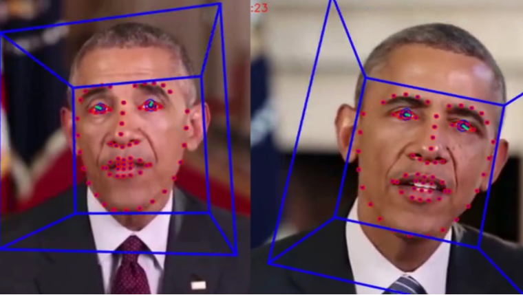

What is DeepFakes
DeepFakes are a type of synthetic media where a person in an existing image or video is replaced with someone else's likeness.
This technology uses deep learning techniques to create realistic-looking fake videos, often making it difficult to distinguish them from real footage.
The Technology Behind DeepFakes
The core technology behind DeepFakes is Generative Adversarial Networks (GANs), which consist of two neural networks: a generator and a discriminator.
The generator creates fake images, while the discriminator evaluates them against real images. Through this adversarial process, the generator improves its ability to create realistic images.

Applications and Concerns
While DeepFakes can be used for entertainment, such as in movies or video games, they also raise significant ethical concerns. They can be used to create misleading information, manipulate public opinion, or even damage reputations by placing individuals in compromising situations. 
What’s Next?
As the technology evolves, so do the methods to detect DeepFakes. Researchers are developing algorithms that can identify inconsistencies in videos, such as unnatural blinking or facial movements. However, the rapid advancement of DeepFake technology means that detection methods must constantly adapt. It is crucial for both individuals and organizations to stay informed about the latest developments and to use critical thinking when evaluating digital media. Education and awareness are key to minimizing the potential harm caused by DeepFakes.